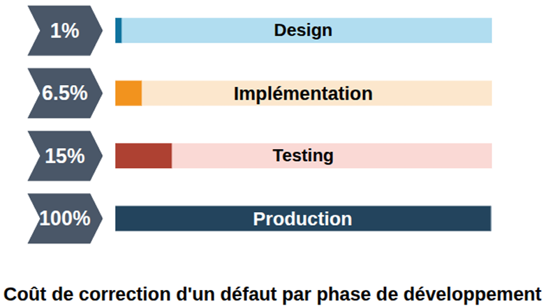
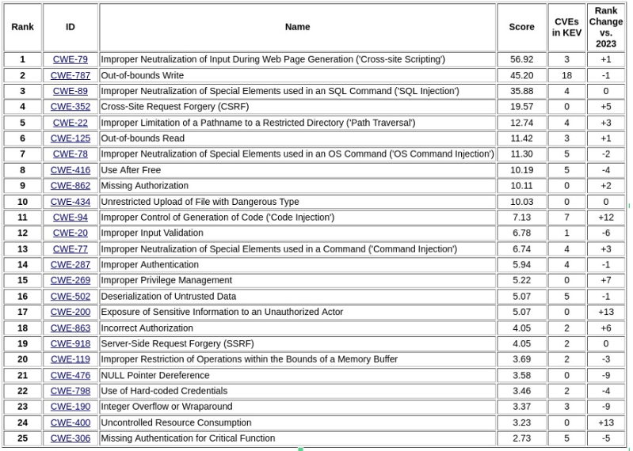
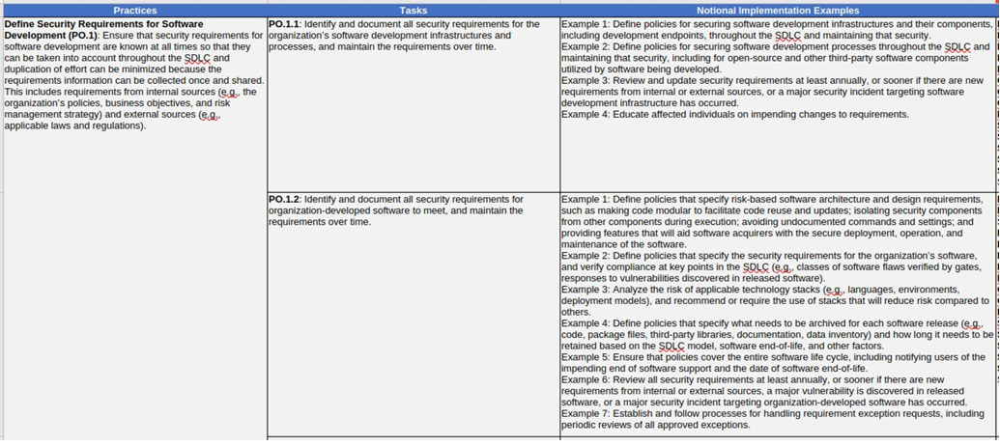
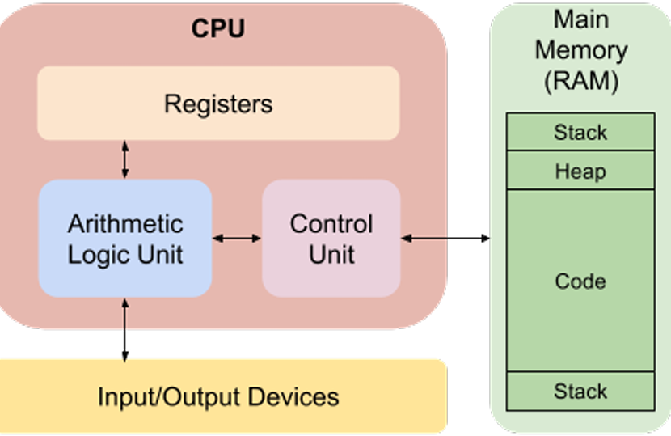
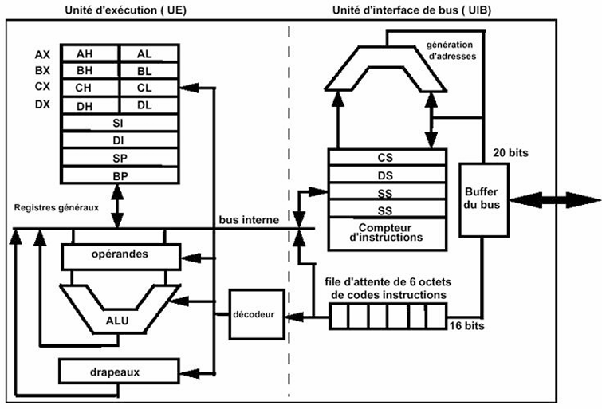
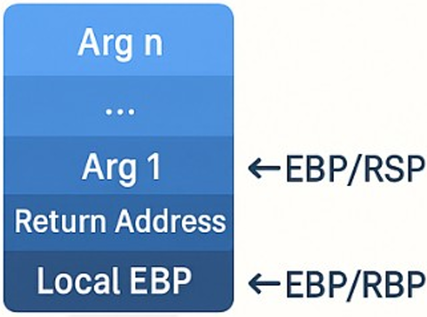
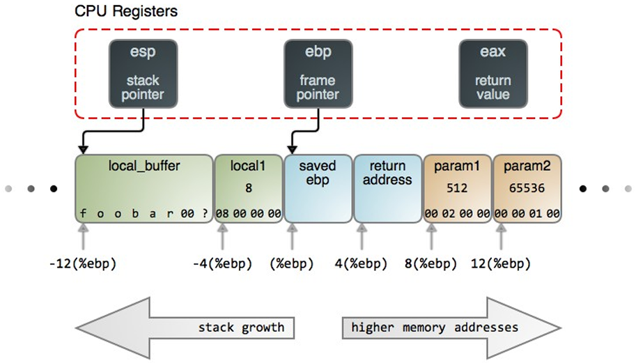
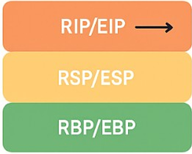
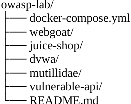

Comprendre les menaces et les modèles d'attaques :
You can't defend what you don't understand
Exemple : Threat Modeling, STRIDE, DREAD, MITRE ATT&CK
Pourquoi comprendre les menaces ?
-
Anticiper au lieu de subir :
Comprendre les menaces, c'est penser comme un attaquant pour anticiper les vecteurs d'exploitation possibles. Cela permet de :
-
Identifier les actifs critiques avant qu'ils ne soient ciblés.
-
Réduire les surfaces d'attaque avant même la mise en production.
-
Prioriser les contrôles de sécurité selon les risques réels.
Exemple : Une application Web sans analyse de menace risque d'ignorer que des formulaires d'authentification peuvent subir du brute force ou du credential stuffing.
-
-
Intégrer la sécurité dès la conception (Shift Left) :
Comprendre les menaces permet de concevoir un logiciel résilient dès les premières phases du SDLC.
-
Les architectes peuvent modéliser les menaces via DFD + STRIDE.
-
Les développeurs peuvent intégrer des contre-mesures directement dans le code.
-
Les testeurs peuvent dériver des scénarios de test à partir des menaces connues.
-
Outils utilisés :
OWASP Threat Dragon, Microsoft Threat Modeling Tool, IriusRisk
MITRE ATT&CK (pour mapping des TTP)
-
-
Améliorer la priorisation et la gestion des risques :
Comprendre les menaces aide à hiérarchiser les efforts de sécurité.
Toutes les vulnérabilités ne se valent pas : une faille de configuration mineure n'a pas le même impact qu'une injection RCE.
Exemple pratique :
Vulnérabilité Impact Probabilité Risque global XSS sur page interne Moyen Faible Moyen Insecure Deserialization Élevé Moyen Élevé -
Favoriser la communication inter-équipes :
Les modèles de menaces servent de langage commun entre Développeurs, Architectes, DevOps/SecOps et Auditeurs et RSSI
Cela favorise la culture sécurité et réduit les malentendus : tout le monde parle en termes de menace, impact, scénario d'attaque, contre-mesure.
-
Se conformer aux normes et référentiels :
Les frameworks exigent une compréhension claire des menaces :
-
ISO 27034 (Application Security).
-
NIST SSDF (Secure Software Development Framework).
-
OWASP SAMM (Threat Assessment).
-
NIS2 / ENISA Guidelines (Supply chain threat modeling).
Sans modélisation de menace, il est impossible de démontrer la conformité à ces cadres.
-
-
Réduire les coûts de correction :
Une menace identifiée tôt coûte 30 à 100 fois moins cher à corriger qu'en production.
Exemple :
Correction d'un XSS détecté à la conception → 100€
Correction après compromission → 10000€ +
SRC : IBM System Science Institute : Relative Cost of Fixing Defects
Typologie des menaces :
-
Attaques logicielles : injection, corruption mémoire, logique métier
-
Attaques infrastructurelles : réseau, système, container
-
Attaques supply chain / open source : Exemples réels : SolarWinds, Log4Shell, XZ backdoor
Définitions clés :
| Élément | Définition | Exemple concret |
|---|---|---|
| Actif | Ce qu'on cherche à protéger (donnée, service, identité, code) | Base de données clients |
| Menace | Intention ou événement malveillant exploitant une faille | Attaquant injectant du code SQL |
| Vulnérabilité | Faiblesse technique ou logique exploitable | Entrée utilisateur non filtrée |
| Impact | Conséquence si la menace se réalise | Vol de données, compromission |
| Risque | Combinaison probabilité x impact | Risque élevé de fuite de données |

Common Weakness Enumeration - Top 25 -2024 :

Table 1
CWE/MITRE TOP 25 Most Dangerous Software Weaknesses (2024)
Failles et vulnérabilités des logiciels :
Les failles critiques de sécurité des applications web comprennent 5 failles liées à un code non sécurisé :
-
Entrées non validées (en C)
-
Cross-site scripting
-
Buffer overflow (en C)
-
Failles d'injection
-
Gestion incorrecte des erreurs
Ces failles sont le résultat d'une vérification et d'une validation insuffisante des données et des codes d'erreur dans les programmes.
La prise de conscience de ces problèmes est une première étape essentielle pour écrire un code plus sécurisé.
Il est important de souligner la nécessité pour les développeurs de se pencher sur ces failles préoccuppantes et connues.
Faille de sécurité :
Chaque faille représente un écart entre l'intention du développeur et le comportement réel du logiciel face à un attaquant.
Chaque faille représente un écart entre l'intention du développeur et le comportement réel du logiciel face à un attaquant. Selon le site www.cvedetails.com en 2024, le total des failles recensées était de 40303.
En 2024, le total des failles recensées était de 40303, dont 7443 XSS et 2645 SQLi. Début octobre 2025, on recense 36705 failles et, à la fin de l'année 2025, on projette un nombre de failles proches de 50000.
Réduire les vulnérabilités logicielles :
Le framework NIST SSDF présente une série d'approches visant à réduire le nombre de vulnérabilités logicielles (voir NIST-SP 800-218).
Il recommande :
-
D'empêcher les vulnérabilités avant qu'elles ne surviennent en utilisant des méthodes améliorées pour spécifier et développer les logiciels.
-
De détecter les vulnérabilités avant qu'elles ne puissent être exploitées en utilisant des techniques de test plus efficaces.
-
De réduire l'impact des vulnérabilités en développant des architectures logicielles plus résilientes.
NIST-SP 800-218 :
Tableau NIST-SP 800-218 (en Excel)
Qualité et fiabilité des logiciels :
-
Éviter toute défaillance accidentelle résultant d'une entrée théoriquement aléatoire et imprévue, ou d'une imprévue, ou d'une intéraction non contrôlée avec le système, ou utiliser un code incorrect (logique incorrecte).
-
Améliorer à l'aide d'un design structuré et de tests afin d'identifier et éliminer autant de bugs que possible dans un programme.
-
La préoccupation ne porte pas sur le nombre de bugs, mais sur la fréquence à laquelle ils se déclenchent.
Failles et vulnérabilités :
-
L'attaquant cible spécifiquement les bugs qui provoquent une défaillance pouvant être exploitée (par l'attaquant).
-
Déclenchées par des entrées qui diffèrent considérablement de ce qui est habituellement attendues.
-
Peu susceptible d'être identifié par les méthodes d'analyse courantes.
Programmation défensive :
-
Concevoir et mettre en oeuvre des logiciels de manière à ce qu'ils continuent de fonctionner même lorsqu'ils sont attaqués.
-
Exige de prêter attention à tous les aspects de l'exécution du programme, à l'environnement et au type de données qu'il traite.
-
Le logiciel est capable de détecter les conditions erronées résultant d'une attaque.
-
Également appelé "programmation sécurisée".
-
La règle d'or est de ne jamais présumer de quoi que ce soit, de vérifier toutes les hypothèses et de gérer tous les états d'erreur possibles.
-
Les programmeurs émettent souvent des hypothèses sur le type d'entrées qu'un programme recevra et l'environnement dans lequel il s'exécutera.
Ces hypothèses doivent être validées par le programme et toutes les défaillances potentielles doivent être gérées avec sécurité.
-
Nécissite un changement de mentalité par rapport aux pratiques de programmation traditionnelles.
Les programmeurs doivent comprendre comment les défaillances peuvent se produire et les mesures à prendre pour réduire le risque qu'elles se produisent dans leurs programmes.
-
Danger !!! Les conflits avec les pressions commerciales visant à réduire au maximum les délais de développement afin de maximiser l'avantage concurrentiel.
Environnement d'un programme :

-
Pratique !
-
Préparation d'un environnement de test !
-
Chaîne de compilation en C.
Lab 1 : Environnement d'exécution :
Objectif : comprendre comment un programme vit en mémoire.
Qu'est-ce qu'un environnement d'exécution ?
C'est un ensemble des ressources allouées à un programme (mémoire, registres CPU, pile, tas...).
Vue d'ensemble de la mémoire d'un processus :
Les registres CPU :
Vue d'ensemble de la mémoire d'un processus :
Le segment de code :
-
Contient les instructions compilées du programme.
-
En lecture seule.
-
Exemple : sections ELF (.text, .rodata).
-
Exercice : compiler et vérifier les sections dans un exécutable (readelf, objdump).
Les segments de données (Data & BSS) :
-
Data : variables globales initialisées.
-
BSS : variables non initialisées.
-
Exemple C :
int global_init = 10; // Data int global_uninit; // BSS
Le tas (Heap) :
-
Zone mémoire dynamique (malloc, calloc, new...).
-
Croît vers le haut.
-
Vulnérabilités : Heap overflow, Use-After-Free, Double Free.
La pile (Stack) :
-
Stocke les variables locales et le contexte d'appel.
-
Croît vers le bas.
-
Structure d'une stack frame :
 
Les registres CPU :
-
EIP/RIP : pointeur d'instruction
-
ESP/RSP : pointeur de pile
-
EBP/RBP : base frame
-
EAX, EBX... : registres de travail
-
Exemple ASM :
push ebp mov ebp, esp sub esp, 0x10 mov eax, [ebp+8] leave ret
Stack vs Heap :
-
Stack : allocation auto, rapide, taille limitée, vulnérable aux overflows.
-
Heap : allocation dynamique, grande, lente, vulnérable aux use-after-free.
Mécanismes de protection mémoire :
-
ASLR : randomisation des adresses
-
DEP/NX bit : empêche exécution sur pile/tas.
-
Stack canaries : détecte les écrasements de pile.
Étude pratique :
#include <stdio.h>
#include <stdlib.h>
int global = 5;
int main() {
int local = 10;
int *p = malloc(sizeof(int));
*p = 20;
printf("%p %p %p\n", &global, &local, p);
free(p);
}Exemple pratique : sections mémoire d'un programme C :
Voici un exemple simple en C illustrant les différentes sections mémoire :
#include <stdio.h>
#include <stdlib.h>
/*gcc -o env_mem_demo env_mem_demo.c
./env_mem_demo */
int global_init = 42; // Segment Data
int global_uninit; // Segment BSS
void function_demo() {
int local_var = 5; // Stack
int *heap_var = malloc(sizeof(int));
*heap_var = 99; // Heap
printf("Adresse Code (function_demo) : %p\n", function_demo);
printf("Adresse Data (global_init) : %p\n", &global_init);
printf("Adresse BSS (global_uninit) : %p\n", &global_uninit);
printf("Adresse Stack (local_var) : %p\n", &local_var);
printf("Adresse Heap (*heap_var) : %p\n", heap_var);
free(heap_var);
}
int main() {
function_demo();
return 0;
}Analyse et visualisation mémoire :
-
Exemple de sortie de commande :
$ size env_mem_demo text data bss dec hex filename 1024 12 8 1044 414 env_mem_demo`.text` : code exécutable (instructions)
`.data` : variables globales initialisées
`.bss` : variables globales non initialisées
-
Heap : mémoire dynamique via malloc()
-
Stack : variables locales et adresses de retour
Conclusion :
-
L'environnement d'exécution est la base de la sécurité mémoire.
-
Comprendre le CPU, la pile et le tas.
-
Indispensable pour debugging, reverse engineering et exploitation.
Les différents fichiers du labo 1 sont :
-
Le fichier `env_mem_demo.c` :
#include <stdio.h> #include <stdlib.h> /* gcc -o env_mem_demo env_mem_demo.c ./env_mem_demo */ int global_init = 42; // Segment Data int global_uninit; // Segment BSS void function_demo() { int local_var = 5; // Stack int *heap_var = malloc(sizeof(int)); *heap_var = 99; // Heap printf("Adresse Code (function_demo) : %p\n", function_demo); printf("Adresse Data (global_init) : %p\n", &global_init); printf("Adresse BSS (global_uninit) : %p\n", &global_uninit); printf("Adresse Stack (local_var) : %p\n", &local_var); printf("Adresse Heap (*heap_var) : %p\n", heap_var); free(heap_var); } int main() { function_demo(); return 0; } -
Le fichier `banner.c` :
#include <stdio.h> #include <string.h> void print_banner(const char *name) { char buffer[16]; strcpy(buffer, name); // vulnérable printf("Hello, %s", buffer); } int main(int argc, char *argv[]) { int secret = 0x41424344; print_banner(argv[1]); printf("Secret after call: 0x%X", secret); } -
Le fichier `mem_layout_demo.c` :
/* mem_layout_demo.c * Petit programme pédagogique pour afficher adresses mémoire * (text / rodata / data / bss / heap / stack / adresses de fonctions). * * Compilez avec : gcc -g -O0 mem_layout_demo.c -o mem_layout_demo * (l'option -g permet l'inspection avec gdb ; -O0 évite les optimisations qui * déplaceraient ou supprimeraient certaines variables locales). */ #include <stdio.h> #include <stdlib.h> /* Segments globaux */ int initialized_global = 0x11223344; /* segment .data (initialisé) */ int uninitialized_global; /* segment .bss (non-initialisé) */ const char *const_string = "Hello, readonly data (rodata)"; void callee(int depth); /* fonction utile pour afficher adresses de fonctions */ void dummy_function(void) { /* vide */ } int main(void) { int local_main = 0xdeadbeef; /* variable locale (stack) */ void *heap_ptr = malloc(64); /* alloue sur le heap */ printf("=== Disposition mémoire (exemple) ===\n\n"); /* adresses du segment code / fonctions */ printf("Adresse de la fonction main() : %p\n", (void*)main); printf("Adresse de la fonction callee() : %p\n", (void*)callee); printf("Adresse de dummy_function() : %p\n", (void*)dummy_function); /* rodata / data / bss */ printf("\nSegments statiques:\n"); printf(" Adresse de la chaîne (rodata) : %p -> \"%s\"\n", (void*)const_string, const_string); printf(" Adresse initialized_global (.data) : %p -> 0x%X\n", (void*)&initialized_global, initialized_global); printf(" Adresse uninitialized_global (.bss) : %p -> 0x%X\n", (void*)&uninitialized_global, uninitialized_global); /* heap et stack */ printf("\nHeap & Stack:\n"); printf(" Adresse heap (malloc 64 bytes) : %p\n", heap_ptr); printf(" Adresse variable locale main (stack): %p -> 0x%X\n", (void*)&local_main, local_main); /* adresse retour approximative (non portable mais pédagogique) */ void *ret_addr = __builtin_return_address(0); printf("\nAdresse de retour (valeur fournie par __builtin_return_address(0)) : %p\n", ret_addr); /* appeler callee qui fera afficher adresses supplémentaires (empilement) */ callee(1); free(heap_ptr); return 0; } void callee(int depth) { int local_callee = 0xfeedface; printf("\n-- dans callee(depth=%d) --\n", depth); printf(" Adresse local callee (stack) : %p -> 0x%X\n", (void*)&local_callee, local_callee); printf(" Adresse return (callee) via builtin: %p\n", __builtin_return_address(0)); if (depth < 2) { /* récursion contrôlée pour montrer plusieurs frames */ callee(depth + 1); } } -
Le fichier `vuln.c` :
#include <stdio.h> #include <string.h> void secret() { printf("Bravo ! - vous avez decouvert secret()!\n"); fflush(stdout); } void vuln() { char buf[16]; printf("Tapez quelque chose:\n"); fgets(buf, 512, stdin); // vulnérabilité intentionelle overflow printf("Vous avez introduit : %s\n", buf); } int main() { setvbuf(stdout, NULL, _IONBF, 0); vuln(); return 0; } -
Le fichier `lab1_buffer_overflow.md` :
# Lab 1 — Buffer Overflow (C) ## Objectifs - Comprendre la pile, ret address overwrite ## Environnement - Compiler: `gcc vuln.c -o vuln -fno-stack-protector -z execstack -no-pie` # -z execstack est une option du linker ELF (Linux) qui demande une pile exécutable. # Sous Windows (format PE) la notion est différente et lld/ld du toolchain MinGW ne reconnaît pas le-z. - Outils: gdb, pwntools ## Étapes (résumé) 1. Trouver offset (pattern_create/pattern_offset) 2. Overwrite retour avec adresse de `secret()` 3. Vérifier protections (ASLR) et disabled protections pour la démo
GCC :
Pour utiliser GCC avec MinGW, il faut d'abord installer Visual Studio Code et installer l'extension C/C++ pour VS Code.
Ensuite, vous devez télécharger et installer la dernière version du logiciel MSYS2. Notez que MSYS2 requiert la version 64 bits de Windows 8.1 ou plus récent.
Une fois l'installation finie, dans le nouveau terminal, installer la toolchain MinGW-w64 en exécutant la commande suivante :
pacman -S --needed base-devel mingw-w64-ucrt-x86_64-toolchainIl faut accepter la sélection par défaut de paquets et procéder à l'installation.
Troisièmement, il faut ajouter le répertoire bin de MinGW-w64 dans la variable d'environnement PATH Windows en ajoutant C:\msys64\ucrt64\bin.
Enfin, on doit vérifier que les outils MinGW-w64 sont correctement installés et disponibles avec les commandes suivants dans un nouveau terminal :
gcc --versionLe GCC (GNU Compiler Collection) est une suite de compilateurs open source créée par le projet GNU.
C'est l'un des outils les plus utiisés pour compiler du code source (langage C, C++, Objective-C, Ada, Fortran, Go, etc.) en binaire exécutable (machine code).
g++ --versiong++ est la version C++ du compilateur GCC. En réalité, g++ fait partie de GCC, mais il active automatiquement la compilation C++ et le linkage des bibliothèques standard C++ (libstdc++).
gdb --versionLe GDB (GNu Debugger) est un débogueur utilisé pour analyser, corriger, et comprendrel'exécution d'un programme C ou C++.
Voici les différentes fonctionnalités à l'intérieur de GDB :
| Commandes | Explications |
|---|---|
| break main | Met un point d'arrêt à main() |
| run | Lance le programme |
| step | Avance une instruction |
| print variable | Affiche la valeur d'une variable |
| continue | Continue jusqu'au prochain breakpoint |
| quit | Quitte |
Pour accéder à l'aide de GCC, il y a plusieurs méthodes possibles :
-
man gccC'est la vraie documentation complète (le "manuel Unix"). Mais elle est trop longue et détaillée, souvent trop verbeuse pour un usage rapide.
Il faut avoir les pages de manuel installées (sudo apt install manpages-dev sur Debian/Ubuntu par exemple).
-
gcc --helpCette commande affiche les options les plus courantes, divisées par sections (linking, warnings, optimization...).
C'est beaucoup plus lisible que man gcc pour un usage rapide.
-
gcc -Q --help=optimizersCette commande liste toutes les optimisations possibles (activées ou non selon ton niveau -o).
-
info gccCette commande ouvre la documentation GNU "info", structurée et plus navigable que man.
Les principales options de GCC lors d'une compilation basique sont :
| Option | Description |
|---|---|
| -c | Compile uniquement en fichier objet (.o), sans édition de liens |
| -o <fichier> | Spécifie le nom de sortie |
| -g | Génère les symboles de débogage (pour gdb, valgrind, etc.) |
| -Wall | Active un grand nombre d'avertissements |
| -Wextra | Active encore plus d'avertissements |
| -std=c11 | Force une norme précise du langage C |
| -pedantic | Vérifie le respect strict de la norme |
Les options d'optimisation -O sont :
| Option | Description |
|---|---|
| -O0 (lettre O + chiffre zéro) |
Aucune optimisation. → Chaque instruction du code C correspond presque directement à une instruction machine. ✓ Idéal pour le débogage. |
| -O1 | Optimisations légères (élimine du code inutile, réduit les sauts inutiles). |
| -O2 |
Optimisations plus poussées mais sûres. → Par défaut pour la plupart des compilations standards. |
| -O3 |
Optimisations agressives (déroulage de boucles, inlining forcé, etc.). ⚠ Peut rendre le débogage plus difficile. |
| -Os | Optimise pour la taille du binaire plutôt que la vitesse. |
| -Ofast |
Active -O3 + certaines optimisations non standards (peut ignorer des règles IEEE sur les floats). |
OWASP TOP 10 Lab Setup :
Objectif :
Mettre en place un laboratoire pratique pour comprendre, exploiter et corriger les vulnérabilités les plus courantes selon l'OWASP Top 10.
Prérequis :
Outils nécessaires :
-
OS : Linux / Mac OS / Windows WSL2
-
Docker et Docker Compose
-
Navigateur : Firefox / Chrome
-
Éditeur : VSCode ou PyCharm
-
(Optionnel) Burp Suite Community Edition
Architecture du Lab :
Chaque vulnérabilité est isolée dans un container ou un dossier distinct.
Environements vulnérables:
-
DVWA - Damn Vulnerable Web Application :
-
Cible : Injection SQL, XSS, File Upload, CSRF, etc.
-
URL : http://localhost:8080
-
Docker run :
docker run -d -p 8080:80 --name dvwa vulnerables/web-dvwa
-
-
OWASP Juice Shop :
-
Cible : Broken Auth, Sensitive Data Exposure, Injection, etc.
-
URL : http://localhost:3000
-
Docker run :
docker run -d -p 3000:3000 --name juice-shop bkimminich/juice-shop
-
-
WebGoat + WebWolf :
-
Cible : Advanced OWASP lessons (Java, API, Auth, Crypto)
-
URL : http://localhost:8081/WebGoat
-
Docker run :
docker run -d -p 8081:8080 --name webgoat webgoat/webgoat
-
-
Multillidae II :
-
Cible : OWASP Top 10 complet + API + vulnérabilités business logic
-
URL : http://localhost:8090
-
Docker run :
docker run -d -p 8090:80 --name multillidae citizenstig/nowasp
-
Docker Compose simplifié :
Crée un fichier docker-compose.yml :
version: '3'
services:
dvwa:
image: vulnerables/web-dvwa
ports:
- "8080:80"
juice-shop:
image: bkimminich/juice-shop
ports:
- "3000:3000"
webgoat:
image: webgoat/webgoat
ports:
- "8081:8080"
mutillidae:
image: citizenstig/nowasp
ports:
- "8090:80"Lancer :
docker compose up -dSchénarios de pratiques OWASP Top 10 :
| OWASP Top 10 | Application | Exemple d'exercice |
|---|---|---|
| A01 - Broken Access Control | Juice Shop | Accès à un profil admin via IDOR |
| A02 - Cryptographic Failures | WebGoat | Mauvais stockage de mot de passe |
| A03 - Injection | DVWA | Injection SQL et Command Injection |
| A04 - Insecure Design | Mutillidae | Mauvaise logique d'authentification |
| A05 - Security Misconfiguration | DVWA | Exposition des pages d'admin |
| A06 - Vulnerable & Outdated Components | WebGoat | Exploitation de dépendances |
| A07 - Identification & Auth Failures | Juice Shop | Session hijacking |
| A08 - Software & Data Integrity Failures | WebGoat | Manipulation de code signé |
| A09 - Logging & Monitoring Failures | Mutillidae | Attaques non détectées |
| A10 - SSRF | Juice Shop / DVWA | Accès à ressource interne |
Documentation pour les étudiants :
GUIDE.md (avec toutes les sections) :
Labo C - Compilation, édition de liens, debugging & sécurité mémoire :
Les fichiers du Labo C sont :
-
Le fichier `README.md` est :
# Labo C - Compilation, Édition de liens, Debugging & Sécurité mémoire Ce laboratoire complet en langage C permet d'apprendre : - Le processus de compilation (`.c → .o`) - L'édition de liens (archives statiques `.a`, bibliothèques `.so`) - L'analyse des binaires (`nm`, `objdump`, `readelf`, `file`) - Le debugging avancé avec `gdb` - L'observation des sections mémoire (stack / heap / .text / GOT / PLT) - Les vulnérabilités mémoire : - Stack buffer overflow - Heap Use-After-Free - Format String - Overwrite de fonction (function pointer) - Ret2libc / ROP (initiation) - Les mécanismes de protection : - ASLR, PIE - NX - Stack canaries - RELRO **IMPORTANT** Toutes les manipulations sont à exécuter **uniquement dans une VM isolée**. --- # 1. Arborescence src/ main.c util.c / util.h mathlib.c / mathlib.h vuln.c / vuln.h heap.c fmtstr.c Makefile --- # 2. Compilation ## Tout compiler Génère : - `bin/main` : programme principal - `bin/vuln_nosafe` : version vulnérable (sans protections) - `lib/libmath.a` : archive statique - `lib/libmath.so` : bibliothèque partagée --- # 3. Utilisation ./bin/main vuln "AAAA" ./bin/main callfp ./bin/main heap "HELLO" ./bin/main fmt "%p %p %p" Version vulnérable pour exploitation : ./bin/vuln_nosafe vuln $(python3 -c "print('A'*200)") --- # 4. Analyse des binaires nm -C bin/main nm -C lib/libmath.a readelf -h bin/main objdump -d bin/main | less objdump -d lib/libmath.so | less --- # 5. Debugging GDB gdb --args bin/main vuln AAAAAAAAAA (gdb) break vuln_input (gdb) run (gdb) info frame (gdb) disassemble (gdb) x/40x $rsp --- # 6. Exercices sécurité ### Buffer overflow (stack) - Calculer l'offset jusqu'au RIP - Overwrite du retour pour exécuter `secret_admin()` - Comparer comportements avec / sans PIE et stack-protector ### Overwrite d'un function pointer - Trouver l'adresse de `global_fp` - L'écraser via un overflow ### Format String - Lire la stack via `%p %p %p ...` - Écrire en mémoire via `%n` ### Heap Use-After-Free - Observer réutilisation de chunk - Corrompre données réallouées ### Ret2libc (initiation) - Trouver l'adresse de `system()` dans libc - Construire un payload simple --- # 7. Protections & durcissement Construire un binaire protégé : gcc -g -O2 -fstack-protector-strong -D_FORTIFY_SOURCE=2 -Wl,-z,relro,-z,now -fPIE -pie -o main_hardened src/*.c Désactiver ASLR temporairement (root) : echo 0 | sudo tee /proc/sys/kernel/randomize_va_space Ou exécuter sans ASLR : setarch uname -m -R ./bin/vuln_nosafe --- # 8. Avertissement Ce labo ne doit être utilisé **que pour l'apprentissage**. Ne jamais appliquer ces techniques hors environnement autorisé. --- # 9. Mots de l'Auteur Labo conçu pour la formation *Software Security / Sécurité logicielle*.Un fichier .a est une archive qui contient des objets compilés (.o). Ces objets sont composés directement dans le binaire final au moment du linking.
Un fichier .so (shared object) est chargé à l'exécution, pas intégré au binaire.
Pour utiliser la commande file, soit on utilise Git Bash pour Windows ou sinon l'installe via MSYS2 avec la commande suivante :
pacman -S fileOu alors utiliser la commande certutil -dump dans Windows pour fournir le type MIME.
Windows n'a pas d'équivalent direct de readelf parce qu'il n'utilise pas ELF. Mais tu peux analyser un binaire PE avec dumpbin.
readelf dumpbin readelf -h dumpbin /headers readelf -s dumpbin /symbols readelf -r dumpbin /imports readelf -d dumpbin /exports gcc util.c -o util.oLa commande précédente lance une erreur car il manque le paramètre -c afin de compiler. Cela donne ceci :
gcc -c util.c -o util.o -
Le fichier `Makefile` est :
CC = gcc CFLAGS = -g -Wall -fno-omit-frame-pointer SRC = src OBJDIR = obj all: bin/main bin/vuln_nosafe lib/libmath.a lib/libmath.so $(OBJDIR): mkdir -p $(OBJDIR) $(OBJDIR)/util.o: $(SRC)/util.c $(SRC)/util.h | $(OBJDIR) $(CC) $(CFLAGS) -c $< -o $@ $(OBJDIR)/mathlib.o: $(SRC)/mathlib.c $(SRC)/mathlib.h | $(OBJDIR) $(CC) $(CFLAGS) -fPIC -c $< -o $@ $(OBJDIR)/vuln.o: $(SRC)/vuln.c $(SRC)/vuln.h | $(OBJDIR) $(CC) $(CFLAGS) -c $< -o $@ $(OBJDIR)/heap.o: $(SRC)/heap.c | $(OBJDIR) $(CC) $(CFLAGS) -c $< -o $@ $(OBJDIR)/fmtstr.o: $(SRC)/fmtstr.c | $(OBJDIR) $(CC) $(CFLAGS) -c $< -o $@ lib/libmath.a: $(OBJDIR)/mathlib.o mkdir -p lib ar rcs $@ $^ lib/libmath.so: $(SRC)/mathlib.c mkdir -p lib $(CC) -shared -fPIC -o $@ $< bin/main: $(OBJDIR)/util.o $(OBJDIR)/vuln.o $(OBJDIR)/heap.o $(OBJDIR)/fmtstr.o $(SRC)/main.c lib/libmath.a mkdir -p bin $(CC) $(CFLAGS) -no-pie -o $@ $(OBJDIR)/util.o $(OBJDIR)/vuln.o $(OBJDIR)/heap.o $(OBJDIR)/fmtstr.o $(SRC)/main.c -Llib -lmath -Wl,-rpath,'$$ORIGIN/../lib' bin/vuln_nosafe: $(SRC)/vuln.c $(SRC)/util.c $(SRC)/main.c mkdir -p bin $(CC) -g -fno-stack-protector -z execstack -no-pie -o $@ $(SRC)/main.c $(SRC)/vuln.c $(SRC)/util.c -Llib -lmath -Wl,-rpath,'$$ORIGIN/../lib' clean: rm -rf obj bin libVoici quelques explications :
CC = gcc → compilateur utilisé CFLAGS = -g -Wall -fno-omit-frame-pointer # -g → inclut les symboles de debug # -Wall → active tous les warnings # -fno-omit-frame-pointer → nécessaire pour l'analyse en debug/gdb/exploit SRC = src → dossier où sont les sources OBJDIR = obj → dossier où seront placés les .omake pour construire le programme principal bin/main, une version vulnérable bin/vuln_no-safe, la lib statique, la lib dynamique.
Pour installer make sur Windows, on peut utiliser la commande :
pacman -S make$(OBJDIR): mkdir -p $(OBJDIR)Make crée automatiquement le dossier obj avant de compiler.
Chaque règle compile un fichier .c du dossier src/ en .o dans obj/.
L'option -fPIC est nécessaire pour créer une bibliothèque partagée (.so).
lib/libmath.a: $(OBJDIR)/mathlib.o mkdir -p lib ar rcs $@ $<Ce code crée une biblio statique (.a), lib/libmath.a, qui contient mathlib.o et qui utilise ar pour créer l'archive.
$@ représente le fichier à construire, c'est-à-dire la cible de la règle. Ici, $@ = lib/libmath.a.
$< représente la première dépendance après le deux-points, c'est-à-dire le premier fichier listé dans les dépendances. Ici, $< = obj/mathlib.o.
$^ représente toutes les dépendances (sans duplicata).
$+ représente toutes les dépendances (avec duplicata).
$? représente les dépendances plus récentes que la cible.
lib/libmath.so: $(SRC)/mathlib.c mkdir -p lib $(CC) -shared -fPIC -o $@ $<Ce code crée compile directement mathlib.c (pas libmath.o, mais possible) et produit une bibliothèque partagée libmath.so.
clean: rm -rf obj bin libCe code supprime tout ce qui a été généré.
On peut installer ollydbg avec la commande suivante :
sudo apt install ollydbgPour mettre à jor MSYS2 avant d'installer des paquets :
pacman -SyuFermer le terminal et dans le nouveau terminal :
pacman -uPour installer GCC dans MSYS2 :
pacman -S mingw-w64-x86_64-gcc -
Le fichier `util.h` est :
#ifndef UTIL_H #define UTIL_H void print_banner(void); #endif -
Le fichier `util.c` est :
#include "util.h" #include <stdio.h> void print_banner(void) { puts("=== Labo C : compilation & sécurité ==="); } -
Le fichier `mathlib.h` est :
#ifndef MATHLIB_H #define MATHLIB_H int add(int a, int b); int secret(void); #endif -
Le fichier `mathlib.c` est :
#include "mathlib.h" #include <stdio.h> int add(int a, int b) { return a + b; } int secret(void) { puts("You reached secret()"); return 42; } -
Le fichier `vuln.h` est :
#ifndef VULN_H #define VULN_H void vuln_input(char *s); void call_funcptr(void); #endif -
Le fichier `vuln.c` est :
#include "vuln.h" #include <stdio.h> #include <string.h> void secret_admin() { puts("Secret admin function: privileged action!"); } void (*global_fp)() = NULL; void vuln_input(char *s) { char buf[64]; strcpy(buf, s); // vulnérabilité volontaire printf("You entered: %s\n", buf); } void call_funcptr(void) { if (global_fp) { puts("Calling function pointer global_fp()"); global_fp(); } else { puts("global_fp is NULL"); } } -
Le fichier `fmtstr.c` est :
#include <stdio.h> void fmt_demo(char *user) { char buf[128]; snprintf(buf, sizeof(buf), user); // vuln format string volontaire printf("formatted: %s\n", buf); } -
Le fichier `heap.c` est :
#include <stdio.h> #include <stdlib.h> #include <string.h> void heap_demo(const char *input) { char *p = malloc(64); if (!p) return; strcpy(p, "initial"); printf("Before free: %s\n", p); free(p); // Use-after-free volontaire printf("After free (UAF): %s\n", p); if (input) { char *q = malloc(64); if (!q) return; strcpy(q, input); printf("New chunk content: %s\n", q); free(q); } } -
Le fichier `main.c` est :
#include <stdio.h> #include <stdlib.h> #include <string.h> #include "util.h" #include "mathlib.h" #include "vuln.h" void heap_demo(const char *input); void fmt_demo(char *user); int main(int argc, char **argv) { print_banner(); printf("add(2,3) = %d\n", add(2,3)); printf("secret() addr maybe: %p\n", (void*)secret); if (argc >= 2) { if (!strcmp(argv[1], "vuln") && argc >= 3) { vuln_input(argv[2]); } else if (!strcmp(argv[1], "callfp")) { call_funcptr(); } else if (!strcmp(argv[1], "heap") && argc >= 3) { heap_demo(argv[2]); } else if (!strcmp(argv[1], "fmt") && argc >= 3) { fmt_demo(argv[2]); } else { printf("Usage: %s [vuln <str> | callfp | heap <str> | fmt <fmt>]\n", argv[0]); } } else { printf("No action specified. Try: vuln, callfp, heap, fmt\n"); } return 0; }